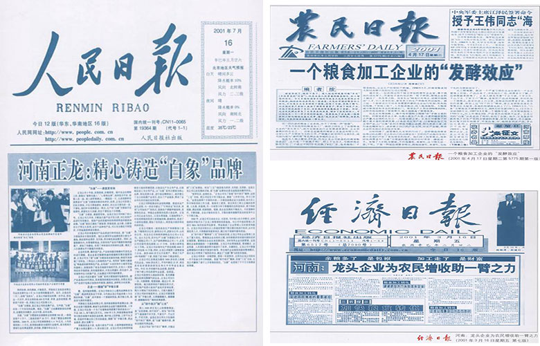
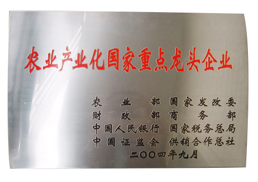

MILESTONE
白象里程碑
里程碑
汤好喝
高汤面
告别传统酱粉包
联系我们
免费热线
400-9007716
联系我们：
电 话：
邮 箱：
内 容：
确认提交
想对白象食品提出您的建议吗？
想了解最新的消息吗？
那就赶快给我们留言吧？!
白象里程碑
白象里程碑
>
里程碑
· 河南省正龙食品有限公司在郑州成立及河南生产基地建立
1997
· 白象获得我17项国家外形设计专利。 
2001
· 率先开发国内第一款骨方便面品类产品“1元大骨面”，大力倡导营养和健康，成为中国乃至全球营养型方便面成功开发和技术突破的重要里程碑，由此，白象食品成为中国“骨汤方便面”品类的开创者和领导品牌。
2003
· 白象荣获“农业产业化国家重点龙头企业”称号。 
2004
· “白象食品爱国主义教育基地”正式在河南新县“鄂豫皖苏区革命博物馆”挂牌成立。
2006
· “与河南省宋庆龄基金会签订捐赠协会，成立“白象大学生成长公益基金”。
2007
· 2020年11月19日，白象食品产品品牌Logo全面换新升级，以“全新白象，幸福有样”为品牌升级传播主题，旨在以全新的品牌理念进入亿万家庭，为消费者提供健康、美味的食品，感受不同的幸福味道。
2020
首页
1
2
3
尾页